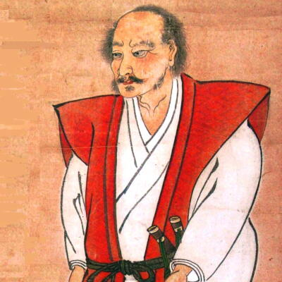
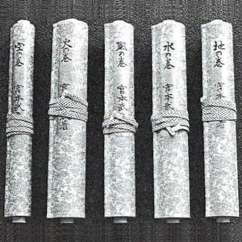

宮本武蔵の紹介


 プロフィール
プロフィール
江戸時代初期の剣術家、兵法家。二刀を用いる二天一流兵法の開祖。
また、重要文化財指定の水墨画や工芸品を残している。
本姓は藤原、名字は宮本、または新免、通称は武蔵、諱は玄信である。幼名は辨助、号は二天、また二天道楽。著書『五輪書』の中では新免武蔵守・藤原玄信と名乗っている。
彼から、クリエイターを目指す君へのメッセージ
「空を道とし、道を空とみる。」
「千日の稽古をもって鍛となし、万日の稽古をもって錬となす。」
「打ち込む態勢をつくるのが先、剣はそれに従うものだ。」
「われ事において後悔せず。」